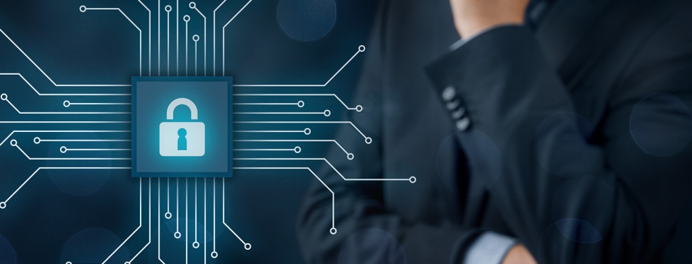

|  |
Головна | 5 порад | Пошук Інформації | контакти |
Що треба знати про безпечний інтернет-серфінг: 5 порад |
|
|
6 лютого 2018 року у світі відзначається День безпечного Інтернету. Гасло цього року – «Створюй, спілкуйся та поважай: кращий Інтернет починається з тобою» з метою залучити до дій кожного, хто відіграє свою роль у створенні кращого Інтернету для всіх, зокрема, наймолодших користувачів. Пропоную ознайомитися з простими порадами, які можуть допомогти мінімізувати ризики в Мережі. Оновлення програмного забезпеченняНайкращим захистом від вірусів є не антивірусний захист, а своєчасне оновлення програмного забезпечення. Адже його розробники слідкують за можливими загрозами і намагаються захистити свої продукти нововведеннями. Тому, коли ваш пристрій пропонує вам оновлення – не ігноруйте це. Перевірка сайтівНаполегливо рекомендую не вводити персональну інформацію (логін, пароль, номер телефону чи платіжної карти) на запити неперевірених сайтів. Фішинг – виловлювання інформаціїОстаннім часом став популярним такий різновид шахрайства як фішинг. Мета фішингу – отримання доступу до конфіденційної інформації користувача (логінів, паролів, даних платіжних карток).
Фішинг може використовувати не лише розсилку листів на електронні адреси, але й онлайн-оголошення, результати пошукових систем, імітацію «випливаючих» вікон із системними повідомленнями, смс-повідомлення розповсюдження інформації у соціальних мережах. Не натискайте на подібні оголошення. Перевірте їх. Задля простої і швидкої перевірки – рідним чи друзям можна зателефонувати, благодійні фонди чи банки мають офіційні контакти, через які можна уточнити будь-яку інформацію, а якщо листи від незнайомих вам осіб чи джерел – просто ігнорувати її. Увага! Пароль!Безпечний пароль – це перша гарантія того, що ваша особиста інформація перебуває під надійним «замком». Як захистити дитину в Інтернеті?Батькам та учителям варто пояснити дитині, що світ Інтернету повний різного роду «злих» чи шкідливих програм – вірусів. Вони викрадають дані з комп’ютера (паролі, персональні дані), можуть видалити всю інформацію або можуть використовувати комп’ютер чи смартфон для вчинення злочинів. Тому, завантажуючи програми самотужки або погоджуючись завантажити будь-які автоматично запропоновані додатки, краще обговорити це з батьками або відмовитися від завантаження самостійно. |
|